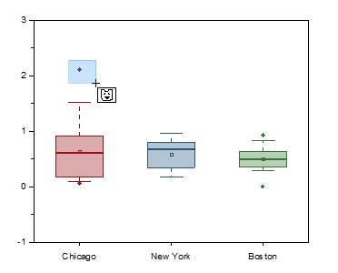

FAQ-827 Wie kann ich Datenpunkte in einem Boxdiagramm maskieren?
how-to-mask-data-points-on-box-chart
Letztes Update: 09.12.2020
Origin 2020b und höher
Um Datenpunkte in einem Boxdiagramm zu maskieren, müssen Sie eine Art von Boxvariation haben, die individuelle Punkte zeigt -- entweder in Form von Ausreißern oder als eine Verteilung von Punkten.
-
- 
- Klicken Sie auf die Schaltfläche Punkte auf aktiver Zeichnung maskieren oder Punkte auf allen Zeichnungen maskieren
 auf der Symbolleiste Hilfsmittel und fahren Sie dann mit der Maus über Ihr Diagramm.
auf der Symbolleiste Hilfsmittel und fahren Sie dann mit der Maus über Ihr Diagramm.
- Verwenden Sie die Leertaste, um den Auswahlmodus zu wechseln.
- Ziehen Sie Ihre Maus, um die Punkte, die Sie maskieren möchten, einzurahmen. Die maskierten Punkte werden von den Boxdiagrammen entfernt und die Statistik wird neu berechnet. Außerdem werden die verbundenen Daten maskiert und mit der aktuellen Maskierungsfarbe im ursprünglichen Arbeitsblatt (Anordnung von Rohdaten) oder im Ausgabearbeitsblatt (Anordnung von Indexdaten) markiert.
- Um die maskierten Punkte anzuzeigen, können Sie die Schaltfläche Maskierung deaktivieren auf der Symbolleiste Maskierung umschalten; um die Maskierung gänzlich zu entfernen, zeigen Sie die maskierten Punkte mit Maskierung deaktivieren an, wählen dann Maskierung der Punkte auf aktiver Zeichnung entfernen
 oder Maskierung der Punkte auf allen Zeichnungen entfernen
oder Maskierung der Punkte auf allen Zeichnungen entfernen  (Symbolleiste Hilfsmittel) und ziehen dann mit der Maus, um die maskierten Punkte einzurahmen. Alternativ können Sie die maskierten Punkte im Arbeitsblatt markieren und auf die Schaltfläche Bereich demaskieren
(Symbolleiste Hilfsmittel) und ziehen dann mit der Maus, um die maskierten Punkte einzurahmen. Alternativ können Sie die maskierten Punkte im Arbeitsblatt markieren und auf die Schaltfläche Bereich demaskieren  klicken.
klicken.
Origin 2020 und älter
Vorgängerversionen unterstützen diese direkte Anwendung der Datenmaskierung nicht, aber Sie können folgenden Workaround verwenden:
- Wählen Sie bei einem Boxdiagramm mit Datenpunkten das Hilfsmittel Datenkoordinaten
 auf der Symbolleiste Hilfsmittel.
auf der Symbolleiste Hilfsmittel.
- Klicken Sie auf den Datenpunkt, den Sie maskieren möchten. Im Anschluss wird das Fenster Dateninfo angezeigt, das die X- und Y-Koordinaten des ausgewählten Datenpunkts zeigt.
- Klicken Sie mit der rechten Maustaste auf das Fenster Dateninfo und wählen Sie Zum Arbeitsblatt gehen im Ausklappmenü.
- Die Zeile des ausgewählten Punkts wird im Arbeitsblatt markiert.
- Markieren Sie nur die bestimmte Datenzelle des Datensatzes erneut, klicken Sie mit der rechten Maustaste auf die Zelle und wählen Sie Maskieren: Anwenden im Ausklappmenü.
Schlüsselwörter:maskieren, Boxdiagramm, Datenpunkt
Origin-Version mind. erforderlich: Origin 2015 SR0